Para el personal de la tienda que tiene cuenta en RECABRA: registrás los montajes de cada día con su foto, revisás qué está pendiente y consultás el estado de los espacios. Nunca ves plata.
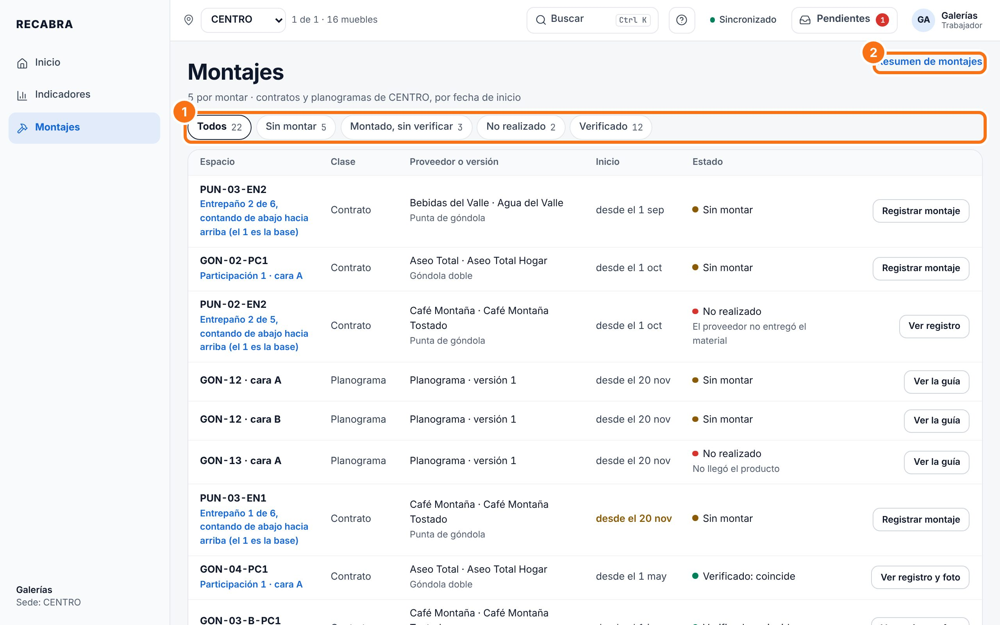
Versión
{{VERSION}} · {{FECHA}}
Sistema
{{APP}}
Equipo
Computador con internet (las pantallas son de un computador de 1280 × 800)
Tiempo de lectura
30 minutos
Datos de ejemplo
Todas las pantallas son de una sede de prueba («CENTRO»). Proveedores, marcas y personas son inventados.
1 Antes de empezar
RECABRA es el sistema donde el supermercado lleva los espacios que le alquila a los proveedores: puntas de góndola, entrepaños, caras de góndola, neveras. Vos sos los ojos y las manos en la tienda: confirmás que lo contratado quedó armado y dejás la foto como prueba.
Lo que hacés con RECABRA
Todos los días: mirar el Inicio y registrar los Montajes (Lo monté con foto, o No pude con el motivo).
Cuando pasa: corregir un montaje que administración marcó como No coincide, o volver a registrar uno que no se pudo hacer.
De vez en cuando: consultar en Indicadores qué espacios están libres, qué vence y qué contratos tuvo un espacio.
Lo que necesitás
Un computador con internet.
Tu cuenta: la invitación que te llegó al correo del trabajo (ver 1.1).
Lo que NO hacés vos
No ves montos ni tarifas, no vendés espacios, no cambiás fechas de contratos, no dibujás el plano y no tocás los ajustes. Tu menú tiene sólo Inicio, Indicadores y Montajes. Si algo de lo otro está mal, avisale a quien administra la sede.
Una sola cuenta
Entrá siempre con la misma cuenta a la que te llegó la invitación. Es personal: no la prestes.
La foto es obligatoria
Sin foto no se puede decir Lo monté. Es la prueba de que quedó armado.
Siempre hay a quién avisar
Ante cualquier duda: quien administra la sede del supermercado.
1.1 Entrar por primera vez (la invitación)
Cuándo: una sola vez, cuando te llega el correo Invitación a Galerías — RECABRA (con el nombre de tu supermercado).
Abrí el correo y tocá el enlace. El correo dice con qué cuenta tenés que entrar y que el enlace vence en 7 días.
Se abre el ingreso con el recuadro Invitación a Galerías: dice tu rol (Rol: trabajador.) y con qué cuenta tenés que entrar (Entrá con la cuenta m•••a@supermercado.example, con letras tapadas).
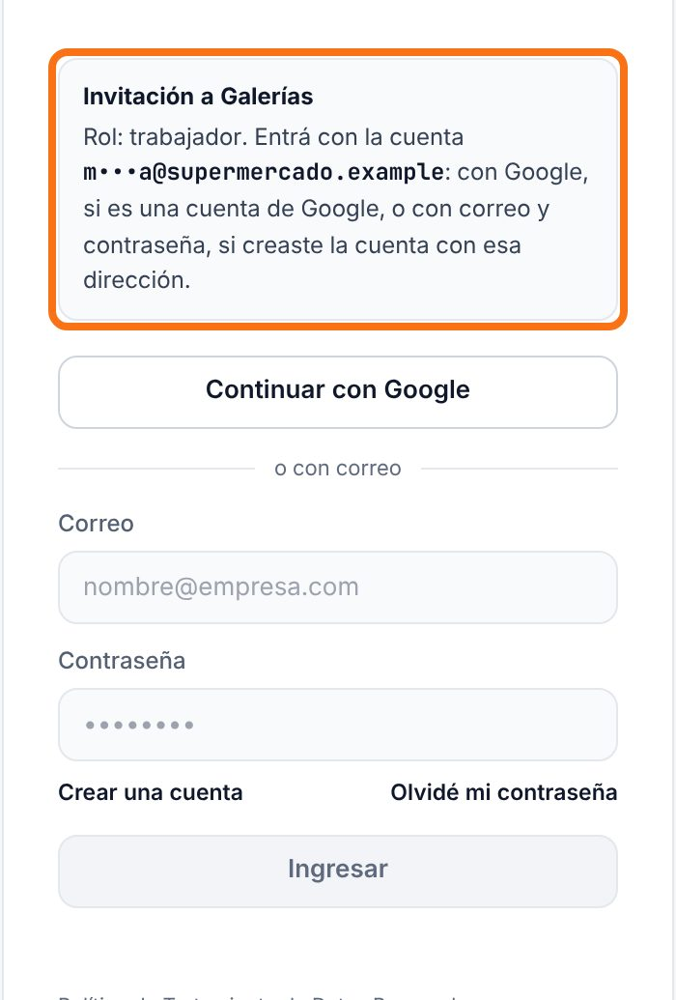
Si esa cuenta es de Google, tocá Continuar con Google y elegila. Si no, escribí ese Correo y una Contraseña. Si todavía no tenés contraseña, tocá Crear una cuenta con esa misma dirección.
Tocá Ingresar. Entrás al Inicio de tu sede.
Si te equivocás de cuenta
Si entrás con otra (por ejemplo, la personal), aparece La cuenta … no tiene acceso a ningún supermercado. Tocá Ingresar con otra cuenta y entrá con la de la invitación. No uses Registrar un supermercado nuevo: eso crea otro supermercado vacío.
Avisale a quien administra la sede
Si el enlace dice La invitación a Galerías venció… o Este enlace de invitación no es válido.: que te mande una nueva.
1.2 Entrar los demás días
Cuándo: cada vez que abrís RECABRA y te pide entrar.
En la portada de RECABRA tocá Ya tengo cuenta.
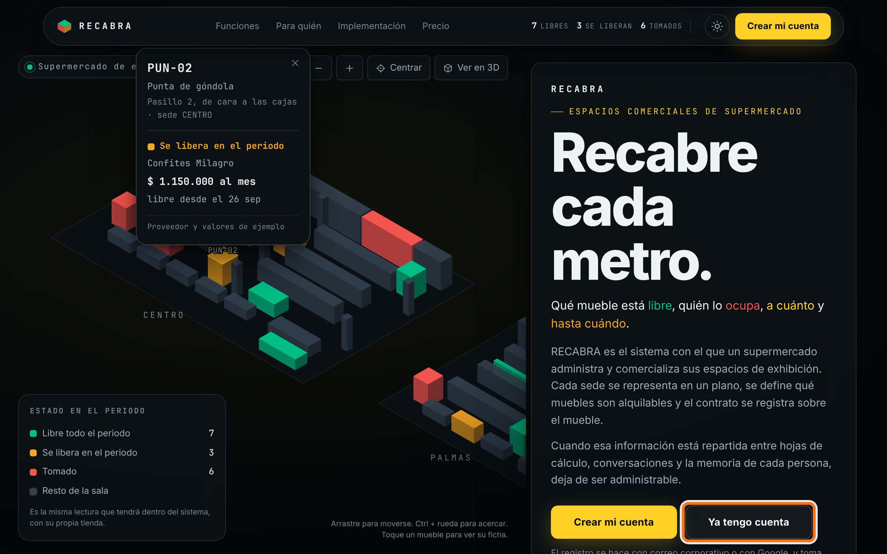
En la hoja de ingreso tocá Continuar con Google (1) o escribí tu correo y tu contraseña (2) y tocá Ingresar.
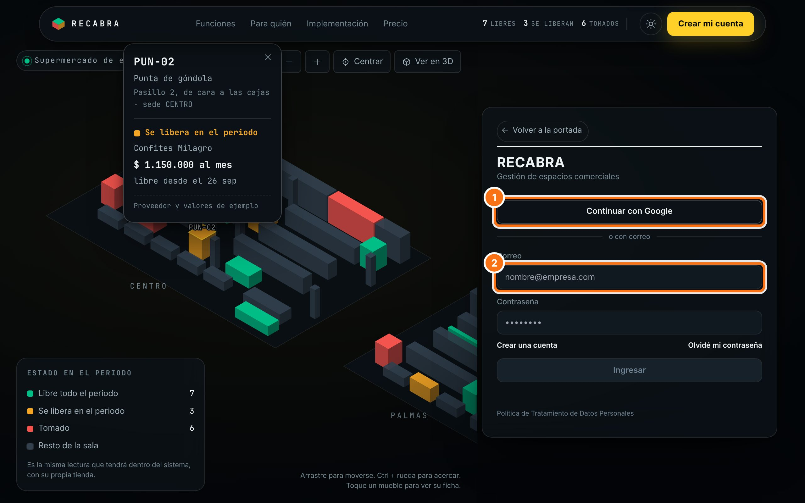
Para tener en cuenta
Crear mi cuenta de la portada no es para vos: es para registrar un supermercado nuevo.
¿Olvidaste la contraseña? Escribí tu correo y tocá Olvidé mi contraseña: te llega un enlace para cambiarla.
La portada muestra un supermercado de ejemplo con precios inventados. No son los de tu tienda.
2 La pantalla de RECABRA
A la izquierda está el menú (Inicio, Indicadores, Montajes). Arriba, la barra que está en todas las pantallas.
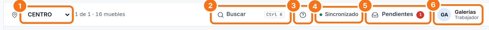
Sede: la tienda que estás mirando (CENTRO). Si cubrís varias, elegí la tuya acá; al lado dice cuántas hay y cuántos muebles tiene (1 de 1 · 16 muebles).
BuscarCtrl K: encuentra una función por su nombre o un espacio por su código (2.1).
?: la ayuda de la pantalla en la que estás (2.2).
Estado:Sincronizado (punto verde) quiere decir que lo que ves está al día con el servidor. Si se corta internet, pasa solo a Sin conexión (rojo) (ver 5.3).
Pendientes: la bandeja de lo que hay que resolver; el número rojo es cuántas cosas hay (3.2).
Tu cuenta: el nombre del supermercado y tu rol (Trabajador). Ahí cambiás el tema y cerrás sesión (2.3).
2.1 Buscar una función o un espacio
Cuándo: cuando no sabés dónde está algo, o querés ver un espacio sin buscarlo en el plano.
Tocá Buscar (o apretá Ctrl + K) y escribí lo que buscás, por ejemplo historial. Elegí el resultado con las flechas y Enter, o tocándolo.
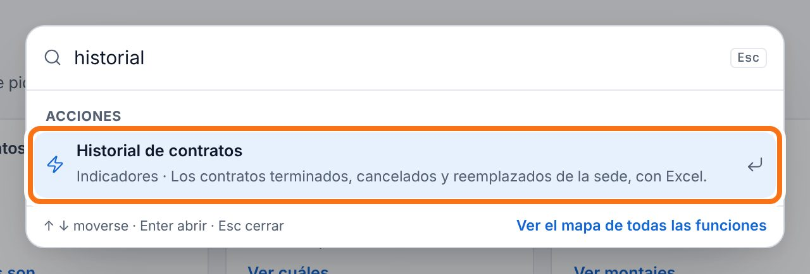
Para un espacio, escribí su código (PUN-07). Aparece en ESPACIOS con su estado: disponible → Ver la ficha. Apretá Enter o tocalo.
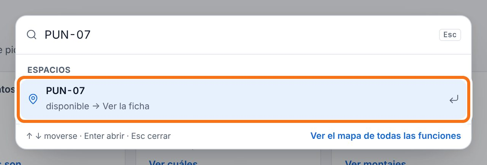
Se abre Indicadores › Plano con ese espacio señalado y su ficha al lado (6.4).
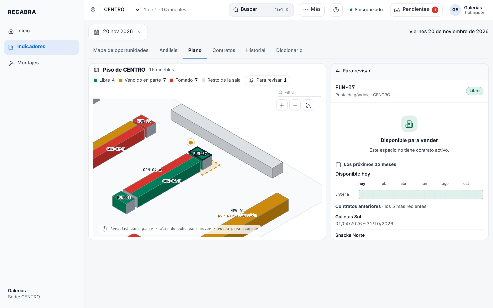
2.2 La ayuda de cada pantalla
El botón ? abre Ayuda · Inicio (o de la pantalla en la que estés): qué hace la pantalla y qué quiere decir cada término. Algunos términos son de administración (por ejemplo Canon, lo que paga el proveedor): no los vas a ver en números.
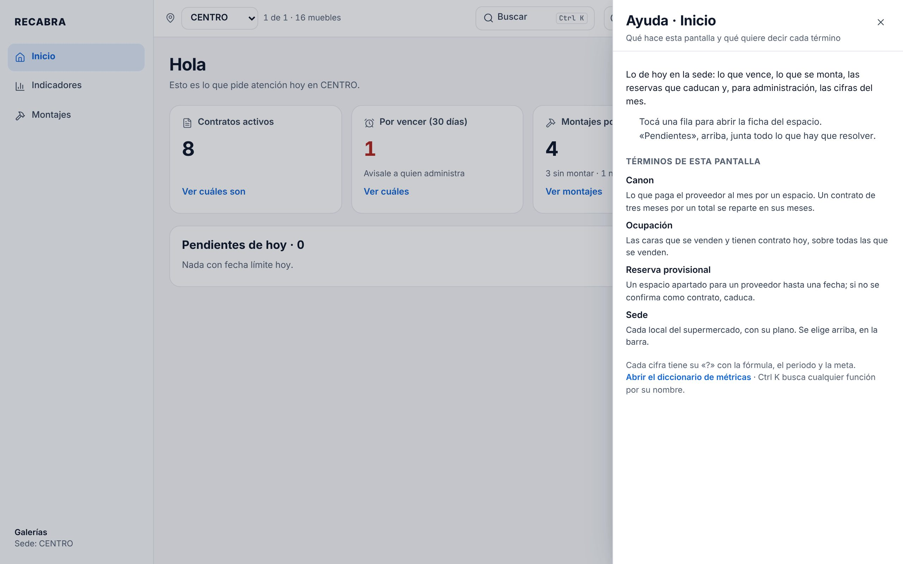
2.3 Tema claro u oscuro y cerrar sesión
Tocá tu cuenta (arriba a la derecha). Para pasar a oscuro (o volver a claro), tocá Tema claro u oscuro. Para salir, Cerrar sesión.
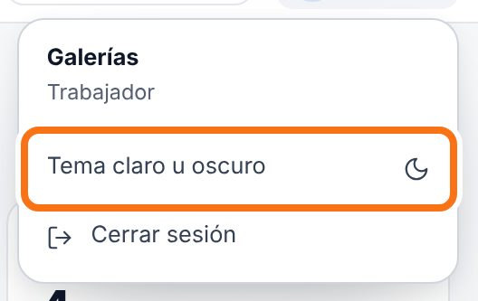
En un computador compartido
Cerrá sesión al terminar el turno: lo que registres con tu sesión abierta queda a tu nombre.
3 Todos los días: el Inicio y los Pendientes
Lo primero que ves al entrar. Te dice qué pide atención hoy en tu sede.
3.1 Mirar el Inicio
Cuándo: al empezar el turno.
Leé las cuatro tarjetas. Cada una tiene un enlace azul que te lleva a la lista.
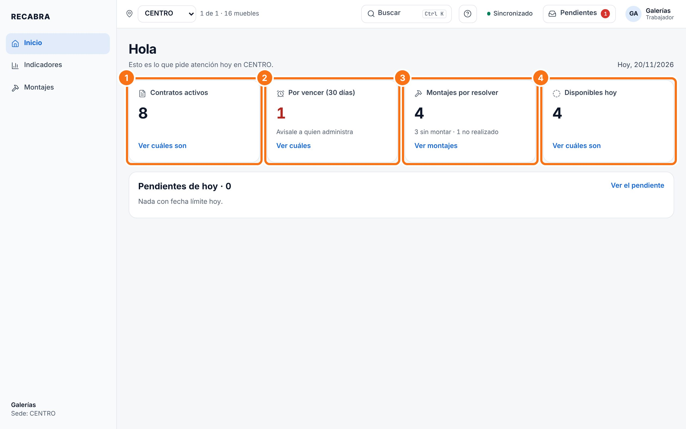
Contratos activos: los contratos vigentes hoy. Ver cuáles son abre la lista.
Por vencer (30 días): los que terminan en el próximo mes. Debajo dice Avisale a quien administra: renovar no es tarea tuya. Ver cuáles los señala en el plano.
Montajes por resolver: lo que falta montar o no se pudo, con el desglose (3 sin montar · 1 no realizado). Ver montajes te lleva a Montajes (capítulo 4). Es la tarjeta que más te importa.
Disponibles hoy: los espacios libres. Ver cuáles son abre la lista.
Abajo, Pendientes de hoy lista lo que vence hoy. Si dice Nada con fecha límite hoy., no hay nada urgente. Ver el pendiente (o Ver los 3, si hay más) abre la bandeja completa (3.2).
Cuando un enlace te lleva a otra pantalla, arriba dice desde dónde viniste (Desde Inicio › Contratos activos…). Tocá Volver al Inicio para regresar.
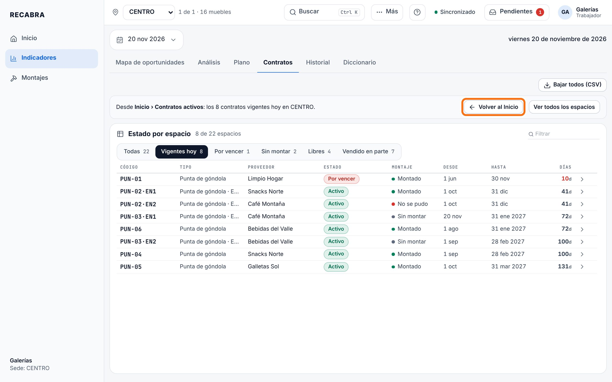
Para trabajar, mirá Montajes
Con tu cuenta, Montajes por resolver cuenta los contratos. Las guías de las góndolas de la casa (planogramas) aparecen sólo en la lista de Montajes (4.5): por eso allá el número puede ser más alto.
3.2 La bandeja de Pendientes
Cuándo: cuando el botón Pendientes de arriba tiene un número rojo.
Tocá Pendientes. Se abre a la derecha, con tres pestañas: Hoy, 30 días y Corregir. Cada fila dice el espacio, el proveedor, la fecha y cuántos días faltan (10d).
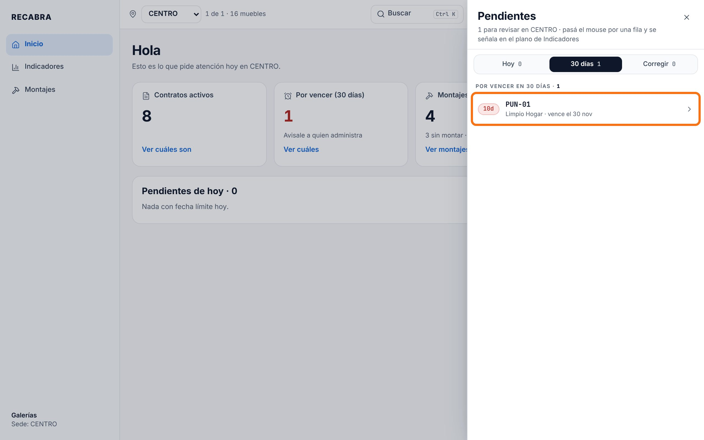
Tocá una fila: se abre el plano de la sede con ese espacio señalado y su ficha al lado (6.4).
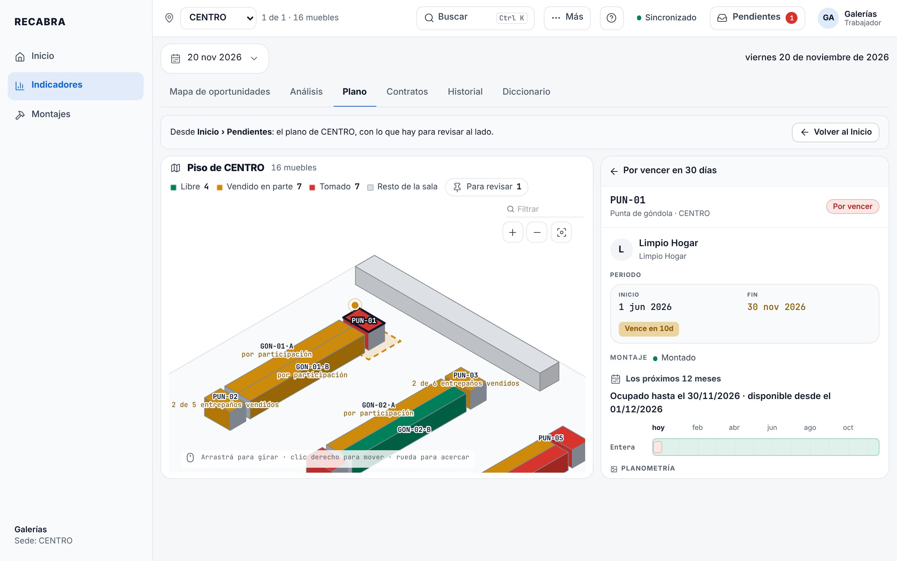
Pestaña
Qué hay
Qué hacés vos
Hoy
Lo que tiene fecha límite hoy. Vacía dice Nada para hoy.
Mirar. Si toca algo de la tienda, avisale a quien administra.
30 días
Contratos que vencen en el próximo mes (Limpio Hogar · vence el 30 nov).
Nada: renovar lo decide administración. Te sirve para saber qué exhibición se va a desarmar.
Corregir
Diferencias entre lo vendido y el plano. Vacía dice Nada que corregir: todo lo que la base tiene vendido se ve en el plano.
Avisale a quien administra si ves algo acá.
Lo resuelve administración
La bandeja es para enterarte. Vencimientos, reservas y diferencias del plano los resuelve quien administra la sede; los montajes los resolvés vos en Montajes.
4 Todos los días: los montajes
Cada contrato que arranca trae una exhibición para armar. En Montajes ves qué falta, lo registrás con la foto y ves lo que ya se registró. Es lo más importante de tu trabajo en RECABRA.
4.1 Ver la lista de montajes
Cuándo: al empezar el turno y cada vez que terminás de armar algo.
Tocá Montajes en el menú. Arriba dice cuántos hay por montar, contando contratos y planogramas (5 por montar · contratos y planogramas de CENTRO). Con los filtros (1) ves sólo un estado; Resumen de montajes (2) abre las cifras en Indicadores. Debajo de cada código está la parte del mueble: Entrepaño 1 de 6, contando de abajo hacia arriba (el 1 es la base) o Participación 1 · cara A.
Estado
Qué quiere decir
Botón
Sin montar
El contrato ya corre y nadie registró el montaje. Si la fecha sale en color (desde el 20 nov), arrancó hoy.
Registrar montaje
Montado, sin verificar
Alguien lo registró con foto; falta que administración la revise.
Ver registro y foto
No realizado
Se reportó No pude, con el motivo debajo.
Ver registro
Verificado: coincide
Administración comparó la foto con lo pedido y está bien. Terminado.
Ver registro y foto
Verificado: no coincide
Hay que corregir algo (5.1).
Ver registro y foto
Una fila Planograma
Una góndola de la casa que se arma con su guía (4.5). Su estado lo avisa quien la monta con el enlace de la guía.
Ver la guía
4.2 Registrar «Lo monté» con foto
Cuándo: apenas terminás de armar una exhibición, con la foto ya tomada.
Tocá el filtro Sin montar y, en la fila del espacio, Registrar montaje.
Se abre el espacio: qué parte del mueble es, el proveedor y la marca, las fechas (Del 20 nov al 31 ene) y, en ASÍ DEBE QUEDAR, la planometría. Tocala para verla en grande y compará con lo que armaste.
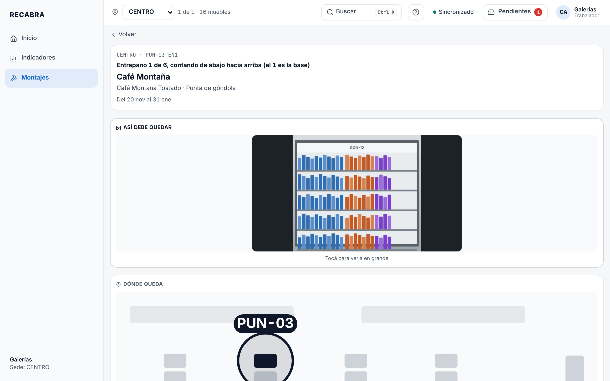
En DÓNDE QUEDA está el plano con el mueble encerrado en un círculo y su código.
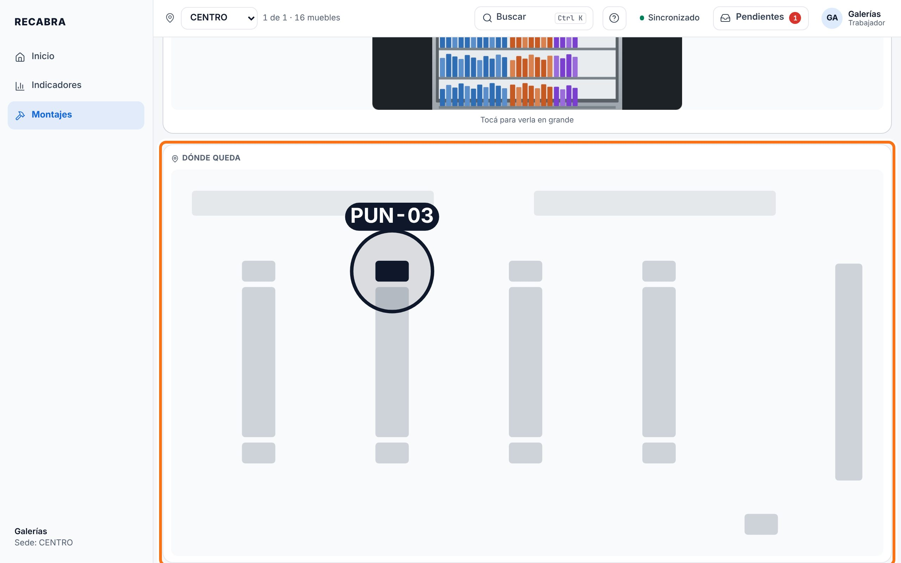
Bajá y tocá Lo monté.
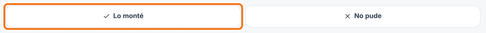
En Foto del espacio armado · obligatoria, tocá Tomar foto (o o elegir una de la galería) y elegí la foto del espacio armado, de frente y entero.
Si aparece Tu nombre, escribilo (1). La Nota · opcional es para algo que haya que saber. Tocá Confirmar (2).
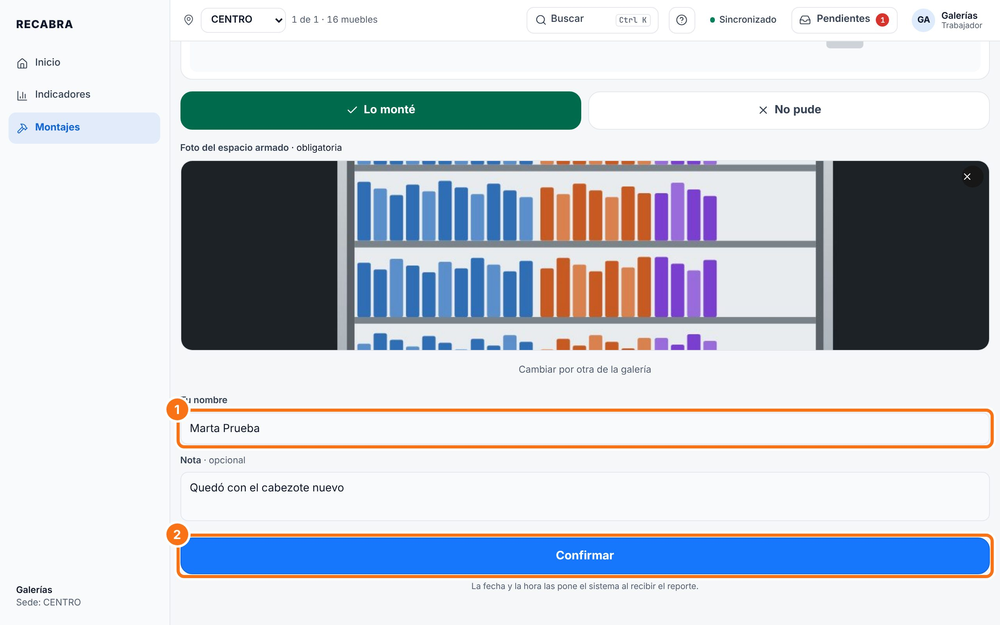
Listo cuando volvés a la lista y arriba dice Listo: PUN-03-EN1 quedó reportado como montado. El espacio ya no está en Sin montar: pasó a Montado, sin verificar. La fecha y la hora las pone el sistema.
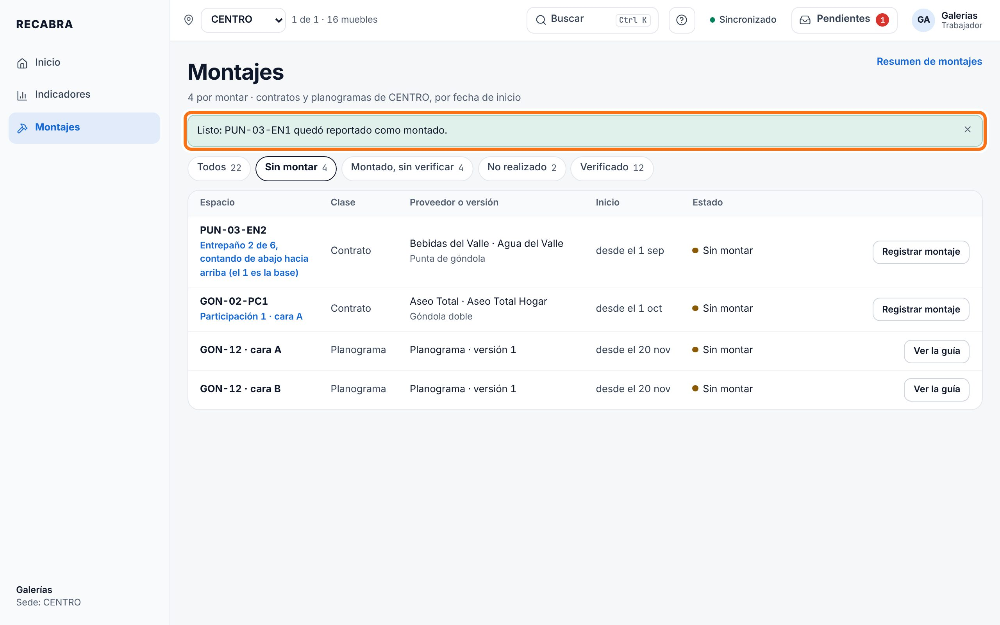
Si te olvidás la foto
Al tocar Confirmar aparece en rojo Falta la foto. Es la prueba de que la exhibición quedó armada. Elegí la foto y volvé a confirmar: no se mandó nada todavía. ¿Elegiste la foto equivocada? Antes de confirmar, tocá la × sobre la foto o Cambiar por otra de la galería. ¿Te arrepentís de todo? Volver, arriba.
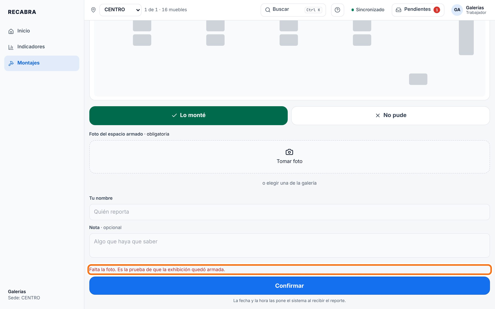
No se puede deshacer
Lo que confirmaste le llega a quien administra la sede. Si mandaste una foto mala, abrí el registro y tocá Registrar de nuevo (4.4): vale el último reporte, pero el anterior no se borra.
4.3 Registrar «No pude»
Cuándo: si no lo podés armar: no llegó el material o el producto, o el espacio está ocupado.
Abrí el espacio con Registrar montaje y tocá No pude. En ¿Qué pasó? elegí el motivo: El proveedor no entregó el material, No llegó el producto, El espacio está ocupado por otra cosa u Otro motivo.
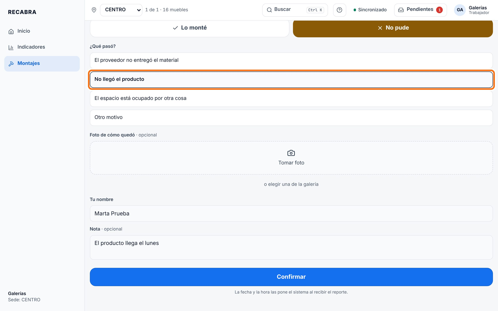
La Foto de cómo quedó · opcional ayuda (por ejemplo, del espacio ocupado). Escribí tu nombre si te lo pide y contá en la nota lo que pasó (El producto llega el lunes).
Tocá Confirmar. Arriba de la lista dice Listo: GON-02-PC1 quedó reportado como no montado, con el motivo. y el espacio queda No realizado con el motivo debajo.
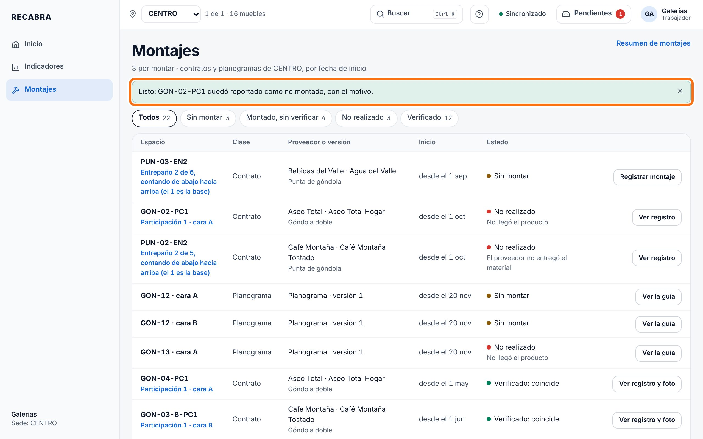
Después
Quien administra la sede ve el motivo y decide: reclamarle al proveedor o liberar el espacio. Cuando llegue lo que faltaba, registrá el montaje de nuevo (5.2). Si el espacio está ocupado por otro proveedor, no lo saques por tu cuenta.
4.4 Ver el registro y la foto
Cuándo: para revisar lo que se registró, o corregir una foto mal mandada.
Tocá Ver registro y foto. Se abre Lo pedido al lado de lo que quedó: la planometría a la izquierda, tu foto a la derecha, y abajo quién y cuándo lo registró.
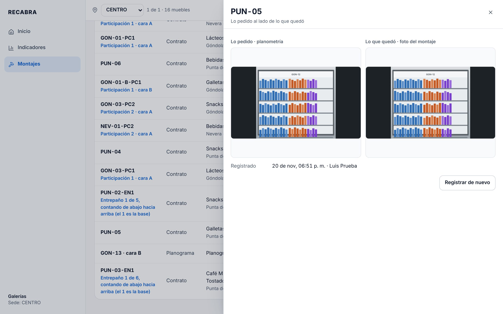
Si hay que mandarlo otra vez, tocá Registrar de nuevo y seguí los pasos de 4.2. Para cerrar sin cambiar nada, la × de arriba o Esc.
No podés verificar
Verificar (decir si la foto coincide) lo hace administración. Vos ves el resultado: Verificado: coincide o Verificado: no coincide.
4.5 Ver la guía de una góndola de la casa
Cuándo: en Montajes aparece una fila Planograma (por ejemplo GON-12 · cara A, Planograma · versión 1) y querés saber qué va en cada franja.
En la fila del planograma, tocá Ver la guía.
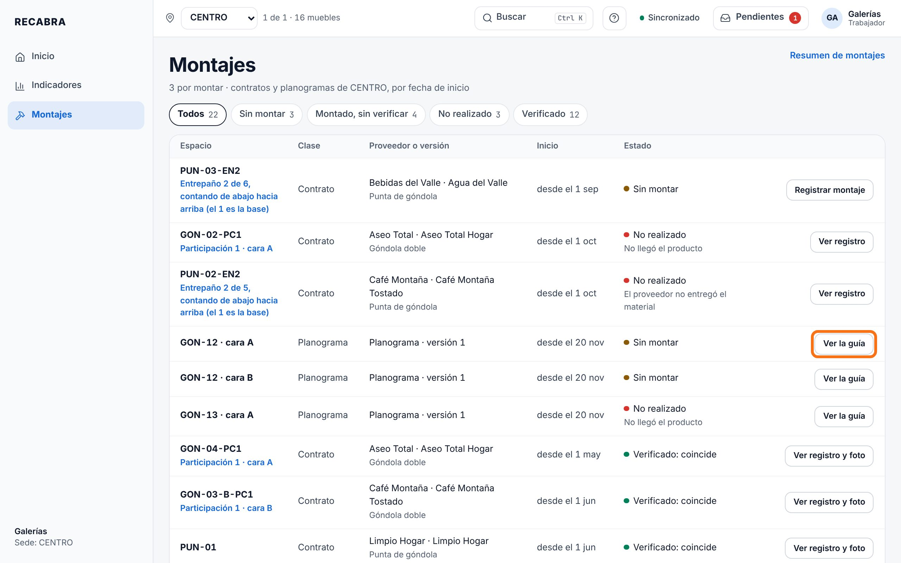
Se abre la Guía de montaje: qué va en cada número, de qué centímetro a qué centímetro y en qué estantes. Los estantes se cuentan desde arriba. Con Imprimir la sacás en papel (sin precios); Cerrar vuelve a la lista.
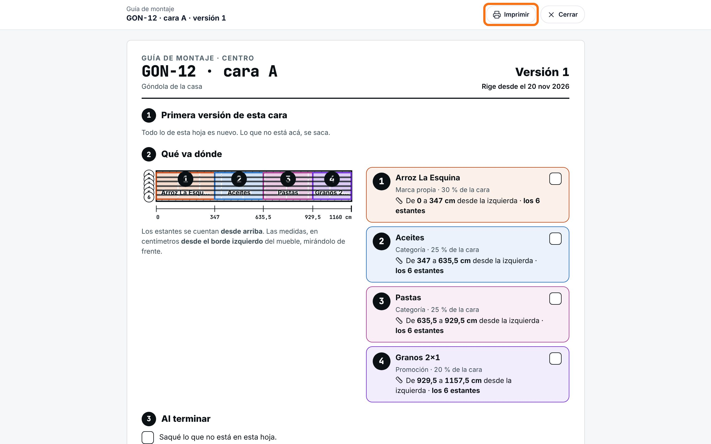
Desde tu cuenta, sólo se lee
Con tu cuenta la guía es para leer e imprimir: no tiene ¿Cómo quedó?. Avisar que quedó montada (o que no se pudo) se hace con el enlace de la guía que llega por correo a quien la monta. Si la armaste vos y no tenés ese enlace, avisale a quien administra la sede.
5 Cuando pasa: corregir, volver a montar, sin conexión
Tres situaciones que no son de todos los días, pero que tenés que saber resolver.
5.1 Administración dijo «No coincide»
Cuándo: un montaje aparece Verificado: no coincide.
Tocá Ver registro y foto. En Verificado está lo que hay que arreglar. En el ejemplo: Falta el cabezote con el logo arriba de la punta.
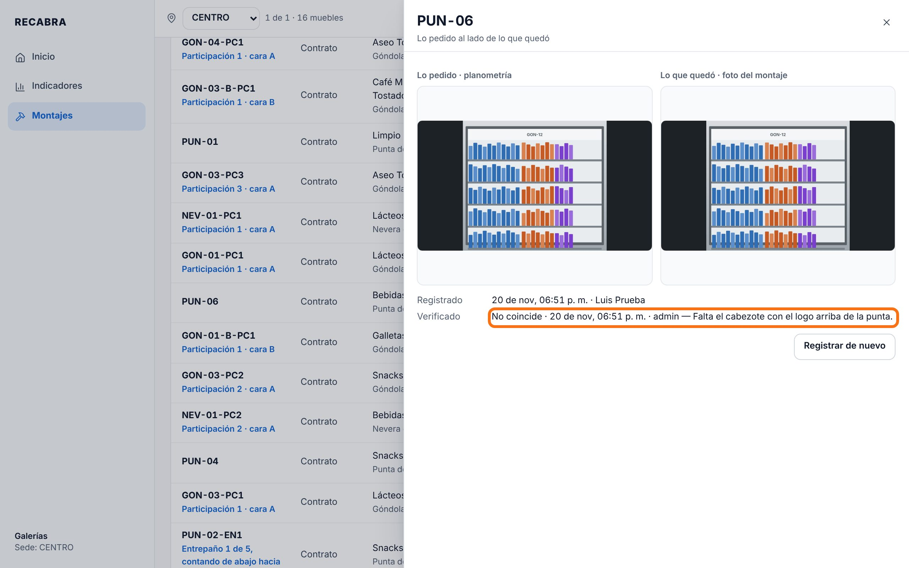
Arreglá la exhibición en la tienda y sacá una foto nueva.
Tocá Registrar de nuevo y registrá Lo monté con la foto nueva (4.2). Vuelve a Montado, sin verificar hasta que administración lo revise otra vez.
5.2 Volver a montar uno «No realizado»
Cuándo: llegó el material o el producto de un montaje que no se pudo hacer.
En la fila No realizado tocá Ver registro. Se ve Sin foto: no se pudo montar., el motivo, la nota y la indicación Reclamale el material al proveedor y, cuando llegue, registrá el montaje de nuevo.
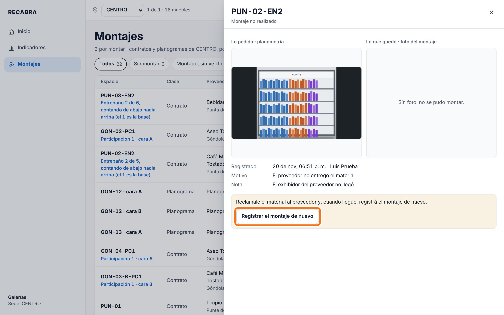
Armá la exhibición y tocá Registrar el montaje de nuevo. Seguí los pasos de 4.2.
Avisale a quien administra la sede
Si el material no llega nunca: reclamarle al proveedor lo decide administración, no vos.
5.3 Me quedé sin internet al confirmar
Cuándo: tocaste Confirmar y se cortó el internet.
No pasa nada: el reporte queda guardado en ese equipo y se manda solo apenas vuelva la conexión. Vas a ver Sin conexión: tu reporte quedó guardado en este equipo. y, abajo, Guardado en este equipo hoy a las … con la hora.
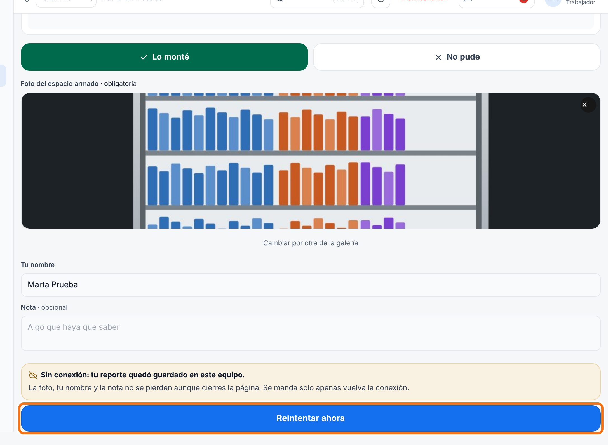
Arriba, el estado pasa solo a Sin conexión, en rojo.
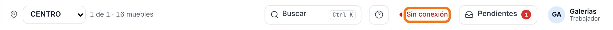
Cuando vuelve internet, el reporte sale solo (o tocá Reintentar ahora para probar ya). Listo cuando ves Listo: PUN-03-EN2 quedó reportado como montado. y el estado vuelve a Sincronizado.
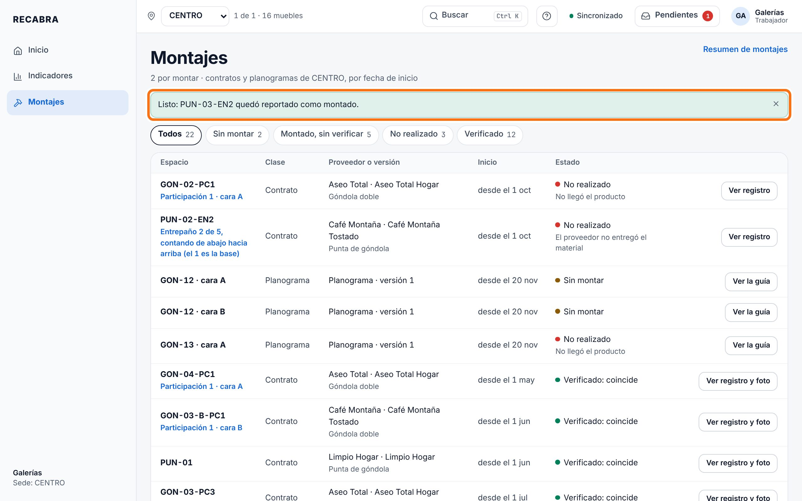
Ojo
El reporte guardado vive en ese computador y en ese navegador. No borres los datos del navegador ni cambies de equipo hasta que el espacio aparezca como Montado, sin verificar. Si cerraste la página, el espacio sigue Sin montar: abrilo otra vez con Registrar montaje y, encima de Lo monté, aparece Tenés un reporte sin mandar. Tocá Mandar ahora (Descartar lo borra sin mandarlo).
6 De vez en cuando: Indicadores
Indicadores es para consultar, no para cambiar nada. Con tu cuenta no aparecen montos ni tarifas. Tiene seis pestañas: Mapa de oportunidades, Análisis, Plano, Contratos, Historial y Diccionario. Al volver, abre la última que usaste.
6.1 Mapa de oportunidades
El resumen de la sede: Ocupación, lo que vence en 90 días, Montajes del mes, el Mapa de decisión con los espacios que piden atención numerados, y abajo Acciones prioritarias. Arriba a la izquierda, la fecha (20 nov 2026) deja mirar otra fecha o una temporada (Black Friday, Navidad…).
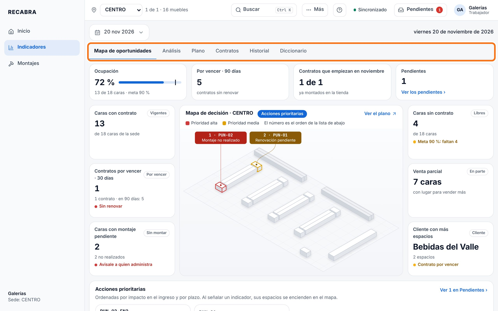
En Acciones prioritarias, cada fila dice qué pasa con el espacio y tiene Ver la ficha. Los botones de tu cuenta dicen lo que hacen: Ver la ficha, Ver el plano, Ver los contratos por vencer. Donde hay algo que decidir (renovar, reclamar), dice Avisale a quien administra.
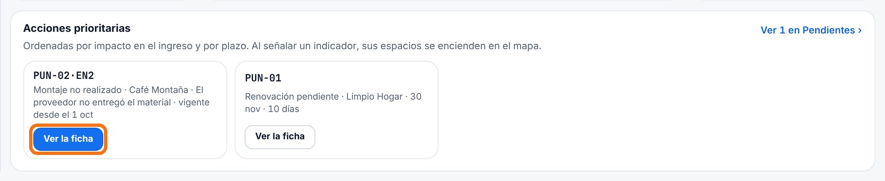
6.2 Análisis y Plano
Análisis explica las cifras: riesgo de vencimientos, la Ejecución operativa de los montajes del mes (de Aviso de montaje enviado a Verificado con evidencia) y la Capacidad por vender (qué espacios tienen lugar, quiénes están y la Situación: Vendida en parte: queda lugar. o Sin contrato hoy.). Plano muestra el piso de la sede en colores: Libre (verde), Vendido en parte (ámbar) y Tomado (rojo). Arrastrá para girarlo y usá la rueda para acercar.
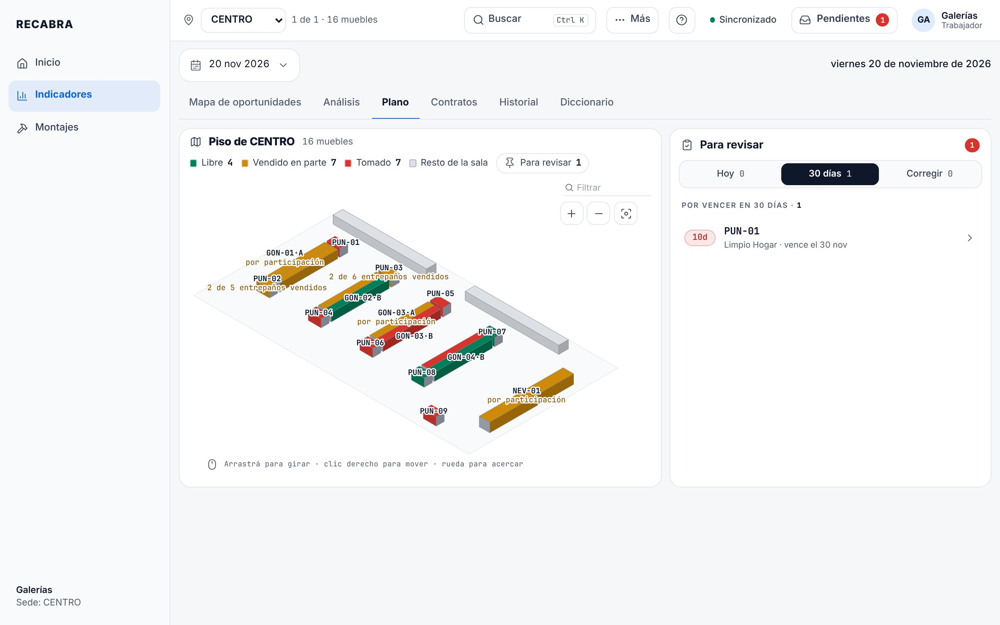
6.3 Contratos: el estado de cada espacio
Cuándo: para saber de quién es un espacio, hasta cuándo va y si está montado.
Abrí la pestaña Contratos. La tabla tiene cada espacio con su proveedor, estado, montaje, fechas y días que le quedan. Con los filtros (1) ves sólo Vigentes hoy, Por vencer, Sin montar, Libres o Vendido en parte. Para encontrar un código, escribilo en Filtrar.
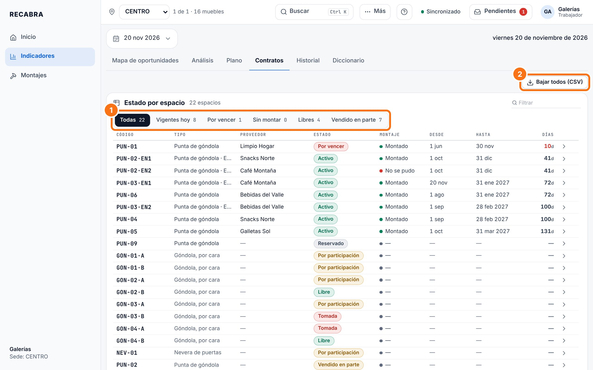
Bajar todos (CSV) (2) baja la lista de contratos vigentes (contratos-CENTRO.csv, sin montos) para abrirla en Excel.
Tocá una fila para abrir la ficha del espacio (6.4).
6.4 La ficha del espacio
Cuándo: para ver todo de un espacio: quién lo tiene, hasta cuándo, cómo debe quedar y qué contratos tuvo.
La ficha se abre a la derecha: código y estado (Por vencer), DÓNDE ESTÁ con Ver en el plano, el proveedor, el PERIODO (Vence en 10d), el MONTAJE, Los próximos 12 meses y la PLANOMETRÍA.
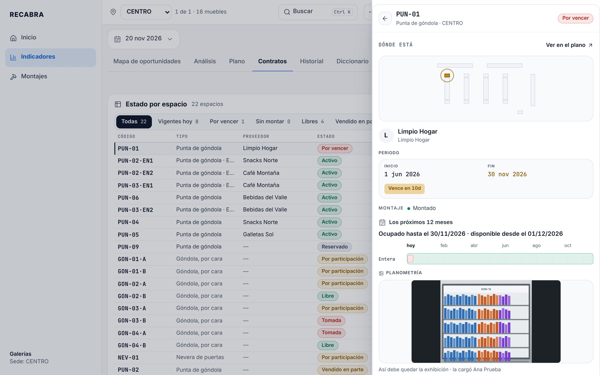
Bajá hasta Contratos anteriores: se ven los 5 más recientes. Si tuvo más, tocá Ver todos (6).
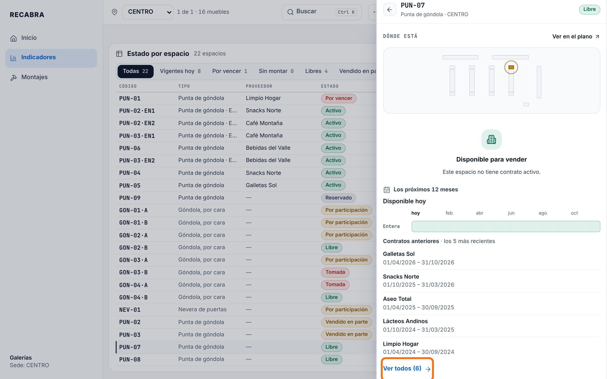
Se abre el Historial filtrado por ese espacio (Espacio: PUN-07). Limpiar filtros vuelve a mostrar todos.
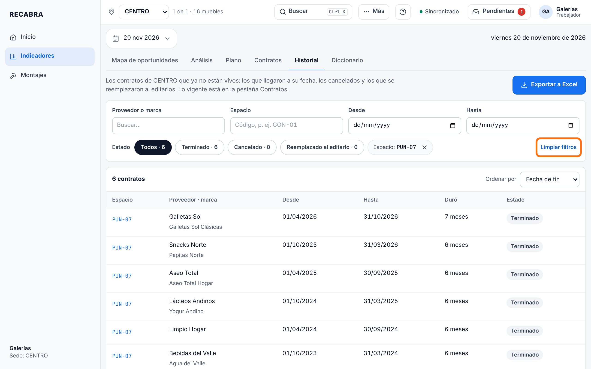
Un espacio libre dice Disponible para vender y Este espacio no tiene contrato activo. Una punta vendida por entrepaños dice Vendido en parte y cuántos quedan (De 5 entrepaños, 2 con contrato: quedan 3 libres para vender.), con cada entrepaño y su proveedor debajo. Para cerrar la ficha, la flecha de arriba a la izquierda o Esc.
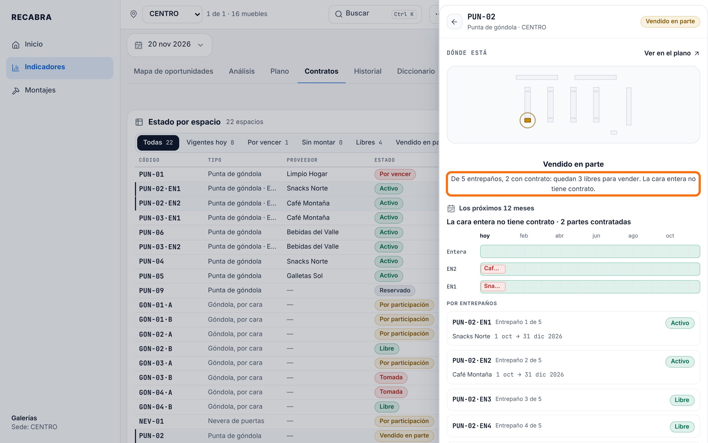
6.5 Historial: los contratos que ya terminaron
Cuándo: te preguntan qué proveedor tuvo un espacio, o necesitás la lista de lo que terminó.
Abrí la pestaña Historial: están los contratos que terminaron, los cancelados y los reemplazados al editarlos. Lo vigente está en Contratos.
Filtrá por Proveedor o marca (1), Espacio, fechas Desde y Hasta, o por estado (2): Terminado, Cancelado, Reemplazado al editarlo. Con Ordenar por cambiás el orden.
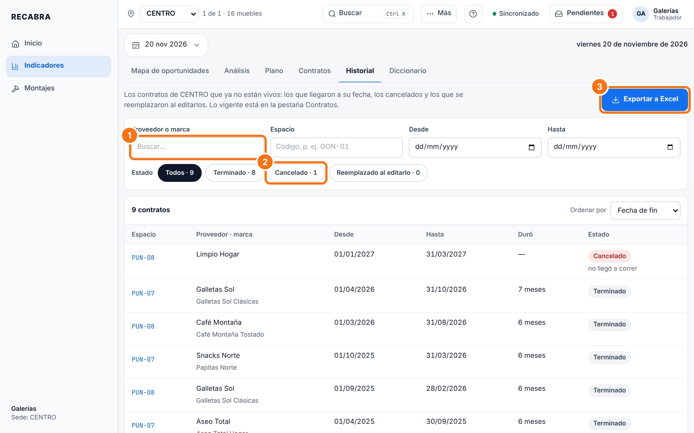
Exportar a Excel (3) baja lo que estás viendo, con esos filtros (historial-contratos-CENTRO-2026-11-20.xlsx, sin montos).
Un cancelado que dice no llegó a correr se dio de baja antes de empezar: en Duró dice —. Tocá el código de un espacio para abrir su ficha.
6.6 Diccionario
La pestaña Diccionario explica cada cifra de Indicadores: su Fórmula, el Periodo, con qué se compara, el Umbral y de dónde salen los Datos. Si una cifra te parece rara, buscala acá antes de preguntar. En Indicadores, el botón Más de la barra lleva directo al diccionario y al historial, y deja fijar hasta 3 atajos en tu barra.
7 Problemas frecuentes
Lo que más pasa y qué hacer.
Lo que pasa
Qué hacer
Arriba dice Sin conexión.
No hay internet. Podés seguir mirando lo que ya estaba cargado. Si registrás un montaje, queda guardado en el equipo y sale solo (5.3).
Al confirmar sale Sin conexión: tu reporte quedó guardado en este equipo.
Esperá a que vuelva el internet o tocá Reintentar ahora. No borres los datos del navegador ni cambies de equipo (5.3).
No veo Contratos, Plano de la sede ni Ajustes.
Son de administración: con tu cuenta no aparecen, y si entrás a esa dirección te devuelve al Inicio. Si necesitás algo de ahí, avisale a quien administra la sede.
Quiero ver un espacio rápido.
Buscar (Ctrl K), escribí el código (PUN-07) y Enter: abre su ficha (2.1).
La foto no carga o tarda.
Revisá que sea una foto (JPG o PNG) y que haya internet. Si dice La subida tardó demasiado, buscá mejor conexión y volvé a tocar Confirmar: el formulario sigue lleno.
No aparece ASÍ DEBE QUEDAR.
Todavía no cargaron la planometría de ese contrato. Podés registrar igual; avisale a quien administra la sede para que la cargue.
Me vuelve a pedir que entre.
La sesión venció o alguien la cerró. Entrá de nuevo con tu cuenta (1.2). Lo que ya confirmaste está guardado.
Veo los espacios de otra tienda.
Cambiaste de sede sin querer: elegí la tuya en el selector de arriba a la izquierda.
Una pantalla dice … no se pudo mostrar y Fue un error nuestro, no algo que hiciste.
Tocá Recargar. Si vuelve a pasar, abrí Detalle para soporte, sacale una foto a la pantalla y mandásela a quien administra la sede.
Registré el espacio equivocado.
No se puede borrar desde tu cuenta. Avisale a quien administra la sede, con el código del espacio, y registrá el correcto.
Un enlace de montaje del correo dice Este enlace ya no sirve.
Venció. Como tenés cuenta, registralo desde Montajes.
8 Palabras que vas a ver
Palabra
Qué quiere decir
Sede
Cada tienda del supermercado, con su plano. Se elige arriba a la izquierda.
Espacio
Lo que se alquila: una punta, un entrepaño, una cara de góndola o una parte de ella. Tiene un código (PUN-01).
Punta de góndola
El extremo de una góndola, el que da al pasillo principal.
Entrepaño (EN1, EN2…)
Un estante de una punta. EN1 es el de abajo (la base).
Cara A / cara B
Los dos lados de una góndola doble.
Participación (PC1, PC2…)
Un pedazo de una cara vendido a un proveedor. En Contratos la cara sale Por participación.
Contrato
El acuerdo con un proveedor por un espacio, con fecha de inicio y de fin.
Reserva
Un espacio apartado para un proveedor hasta una fecha. Si no se confirma, caduca. Sale Reservado.
Planograma · guía de montaje
La hoja numerada de una góndola de la casa (marca propia, categorías): qué va en cada franja. En Montajes, Ver la guía.
Planometría
La foto o el dibujo de cómo debe quedar la exhibición (ASÍ DEBE QUEDAR).
Montaje
Armar la exhibición en la tienda y registrarlo con foto.
Verificado
Administración comparó la foto con la planometría: coincide o no coincide.
No realizado
Se reportó No pude, con el motivo.
Por vencer
Un contrato que termina pronto (en 30 o en 90 días, según la tarjeta).
Ocupación
Las caras que tienen contrato hoy sobre todas las que se venden. Tiene una meta (90 %).
Pendientes
La bandeja de lo que hay que resolver, arriba a la derecha.
Sincronizado
Lo que ves está al día con el servidor.
Quien administra la sede
La persona del supermercado que maneja RECABRA en tu tienda. Es a quien le avisás.